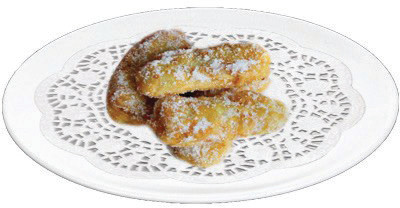

Figure 4.8: Banana frittersNote: Fried or baked sweet dishes are served on doily paper while savoury fried, baked and roasted dishes are served on a bed of salad.

Activity 4.4
Making fritters using fruits
Watch reliable online videos or read from various sources on different fritters made from fruits.
(i) Write down the recipe for the fritters observed.
(ii) What is the benefit of consuming fritters

Activity 4.5
Preparation of banana fritters
Prepare banana fritters for two people using the appropriate method.
(i) Assess the quality of the food prepared.
(ii) Describe any challenges you encountered in preparing the food.
(iii) Describe how you solved the challenges.
FOOD AND HUMAN NUTRITION F1.indd 5418/10/2024 18:26
54